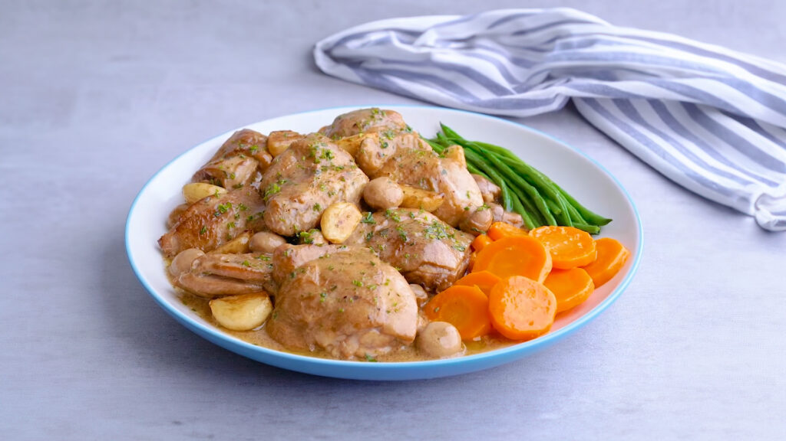

Garlic Mushroom Chicken

Description
Chicken is a delectable choice when it comes to making meals as it is affordable and its various parts can be used for different dishes. With how easy it is to cook this recipe, you can make the Garlic Mushroom Chicken whenever you have run out of ideas about what to cook for mealtime.
With the addition of cream to the savory that contains the flavor of chicken and mushroom, the sauce becomes an even more delectable delight. Creamy, and with the flakiness of the perfectly cooked chicken, this dish will make you lick the sauce off your plate.
Ingredients
- 1 whole chicken, cut into serving pieces
- 4 Tbsps. lemon juice
- 4 Tbsps. soy sauce
To Sauté:
- Oil, for sautéing
- 2 Tbsps. butter
- 12 cloves garlic, whole, peeled
- 2 Tbsps. flour
- 1 can whole button mushrooms
- 1 cup chicken stock
Sauce:
- 1/2 cup Nestle All-Purpose Cream
- 2 Tbsps. chopped parsley
- 1 pack Maggi Magic Sarap
- Salt and pepper, to taste
Instructions
- Marinate the chicken with lemon juice and soy sauce for 15 minutes.
- In a pan, heat the oil and butter. Sear the chicken until it is brown on all sides. Set aside.
- Place the chicken back into the pan. Add the mushrooms. After sautéing the mushrooms, add the flour, marinade, and chicken stock. Cover and let it simmer for 15 - 20 minutes.
- Season with salt and pepper. Cover and leave it to cook until the chicken is fully cooked.
- Add the Nestle All-Purpose Cream. Stir, then top with parsley and garlic. Season with Maggi Magic Sarap, salt, and pepper. Let it simmer for 2 minutes.